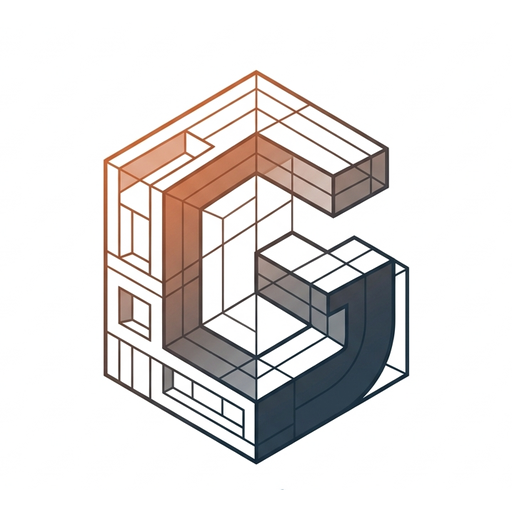
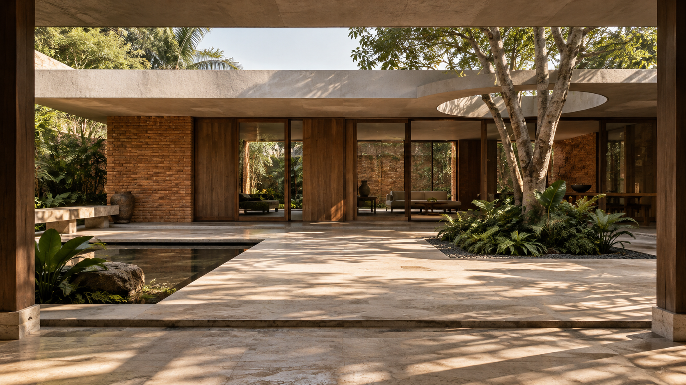

Arsitektur & tata ruang
Menyusun kebutuhan ruang, tata letak fungsional, dan bentuk massa bangunan yang kontekstual.

GradiEntSTUDIOGradiEnt Studio mengembangkan konsep ruang kontekstual, studi tapak dan pencahayaan alami, serta pemodelan 3D arsitektur.

Visual konseptual · AI Diagram konsep
Diagram konsep
 Diagram konsep
Diagram konsep
Setiap proyek berangkat dari konteks yang unik. Lingkup kerja disesuaikan mulai dari eksplorasi awal hingga dokumentasi rancangan.
Menyusun kebutuhan ruang, tata letak fungsional, dan bentuk massa bangunan yang kontekstual.
Membaca orientasi matahari, jalur angin, dan strategi bukaan alami untuk kenyamanan termal dan visual.
Mengembangkan dan menguji gagasan desain melalui model digital 3D dan studi geometri ruang terukur.
Alur kolaborasi yang terstruktur untuk memastikan setiap keputusan rancangan memiliki dasar yang jelas.
Mulai percakapanMemahami aktivitas, kebutuhan ruang, lokasi tapak, prioritas, dan batasan proyek sejak tahap awal.
Keluaran: Brief dan lingkup perancanganMenelaah kondisi tapak, orientasi matahari, sirkulasi akses, dan iklim mikro sekitar sebagai landasan desain.
Keluaran: Pemetaan potensi dan batasanMengembangkan alternatif organisasi ruang, hubungan massa, dan strategi naungan untuk menemukan solusi terbaik.
Keluaran: Konsep terpilih dan diagram ruangMengembangkan gambar arsitektural dan materi visual terukur sesuai tahap pekerjaan yang disepakati.
Keluaran: Dokumentasi rancangan terpaduStudi paviliun halaman dan naungan lebar.
Diagram hubungan ruang bersama dan ruang terbuka.
Diagram orientasi bukaan dan pembiasan cahaya.
3 eksplorasi
GradiEnt Studio adalah praktik arsitektur dan desain spasial yang dirintis Heru Ardiansyah di Makassar. Fokus studio tertumpu pada eksplorasi ruang yang kontekstual, optimalisasi pencahayaan alami, dan respons adaptif terhadap iklim tropis.
Pendekatan desain mengombinasikan studi tapak cermat dengan pemodelan 3D untuk menguji alternatif ruang secara terukur dan komunikatif.
Gambaran kebutuhan, lokasi tapak, dan perkiraan luas jika sudah tersedia. Foto lokasi, referensi rancangan, serta kisaran anggaran akan mempermudah diskusi awal.
Bisa. Tahapan, keluaran dokumen, dan batas pekerjaan disepakati di awal sesuai kebutuhan dan skala proyek Anda.
Penawaran kerja dan jadwal disusun setelah lingkup, kompleksitas ruang, dan materi awal dipahami bersama sebelum pengerjaan dimulai.
Materi yang ditampilkan saat ini merupakan eksplorasi konsep awal dan diagram ruang. Setiap visual diberi keterangan transparan sesuai status pengembangannya.
Ceritakan kebutuhan ruang atau rencana pembangunan Anda.
GradiEnt Studio siap membantu merumuskan arah perancangan yang tepat.